| |
Поселок ч.2. Военные здания
6.1.
Казарма, тренировка пехоты
Добрый день, уважаемый учащийся
и сегодня мы перейдем к изучению темы строительства военных зданий в
которых будем тренировать наши боевые юниты, совершенствовать их
характеристики, а также исследовать новые виды войск.
Первым военным зданием, которое мы построим в поселке будет казарма.
Картинка ее выглядит так:
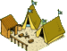
На прошлом занятии мы уже научились строить новые здания на
предназначенных для них стройплощадках, поэтому не будем затягивать
с постройкой казармы, а сразу создадим ее SQL
функцией makebuildplaces.
Но для начала мы должны добавить несколько описаний в наш
скрипт travgame.sql. Во первых мы добавим
новый тип здания - казарма в нашу справочную таблицу
building_types.
insert into building_types (bt_id,bt_name,bt_image,bt_image_not_ready,bt_description,bt_ycoord_dif,bt_template)
values (5,'Казарма','img/vill/g19.gif','img/vill/g19b.gif','В казарме могут быть обучены пехотные войска...',22,'tpl_g19.php');
Фрагмент 6.1.1Затем мы добавляем несколько уровней апгрейдов в таблицу
build_levels_cost.
/*казарма*/
insert into `build_levels_cost`(bt_id, blc_level, blc_wood, blc_clay, blc_ore, blc_grain, blc_cons, blc_time_upgrade)
values (5,0,0,0,0,0,0,'0:00:00');
insert into `build_levels_cost`(bt_id, blc_level, blc_wood, blc_clay, blc_ore, blc_grain, blc_cons, blc_time_upgrade)
values (5,1,70,40,160,20,2,'0:27:50');
insert into `build_levels_cost`(bt_id, blc_level, blc_wood, blc_clay, blc_ore, blc_grain, blc_cons, blc_time_upgrade)
values (5,2,90,50,75,25,1,'0:35:20');
insert into `build_levels_cost`(bt_id, blc_level, blc_wood, blc_clay, blc_ore, blc_grain, blc_cons, blc_time_upgrade)
values (5,3,115,65,100,35,1,'0:43:00');
insert into `build_levels_cost`(bt_id, blc_level, blc_wood, blc_clay, blc_ore, blc_grain, blc_cons, blc_time_upgrade)
values (5,4,145,85,125,40,1,'0:53:50');
insert into `build_levels_cost`(bt_id, blc_level, blc_wood, blc_clay, blc_ore, blc_grain, blc_cons, blc_time_upgrade)
values (5,5,190,105,160,55,1,'1:06:20');
Фрагмент 6.1.2Теперь в функции makebuildplaces
мы с Вами поменяем одну стройплощадку на уже готовую казарму
первого уровня:
insert into `buildings` (bnum,bt_id,b_xcoord,b_ycoord,b_level,fid) VALUES (2,5,210,89,1,p_fid);
Фрагмент 6.1.3Вы видите что для стройплощадки под номером 2 (bnum=2) мы
изменили тип bt_id=1 на тип bt_id=5 (где 5 - идентификатор казармы
из справочника building_types ) и также присвоили ей уровень
равный единице. Казарма готова! Можно выполнить скрипт
travgame.sql.
Войдя в игру, на странице village.php,
кроме главного здания, можно увидеть
и нашу казарму.
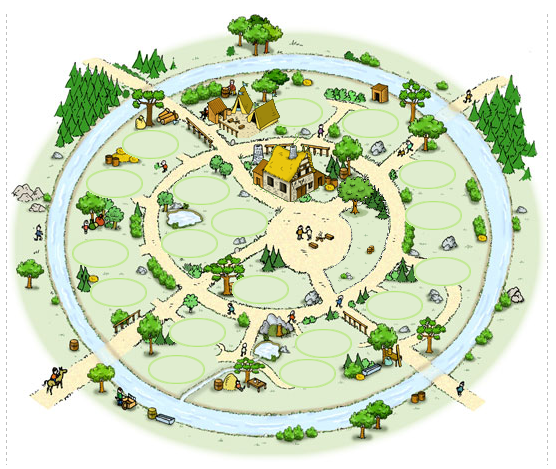
Рисунок 6.1.1
Как Вы понимаете, казарма потребуется нам для тренировки пехоты. Мы
сознательно в учебных целях выбрали только одну расу - римляне и
потому в качестве пехоты у нас будут выступать легионеры,
преторианцы и империанцы.
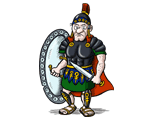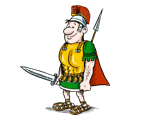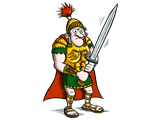
И сейчас мы должны создать справочную таблицу типов войск, которые
будут использоваться в создаваемой нами игре. Назовем мы эту таблицу
spr_army и вот как она выглядит:
/* справочник видов войск */
CREATE TABLE `spr_army` (
sa_id bigint(20) unsigned NOT NULL auto_increment, /*ID*/
sa_name char(50), /*название военного юнита*/
sa_image CHAR(50) ,
sa_attack int, /* атака */
sa_inf_defence int, /* защита от пехоты*/
sa_cav_defence int, /* защита от конницы*/
sa_grain INT, /*зерно*/
sa_ore INT, /*руда*/
sa_wood INT, /*дерево*/
sa_clay INT, /*глина*/
sa_speed INT, /*скорость, полей в час*/
sa_capacity INT, /*грузоподъемность*/
sa_cons INT, /*потребление зерна*/
sa_training_time CHAR(20), /*время обучения (для здания 1 уровня)*/
sa_description CHAR(255), /*описание*/
bt_id int, /*принадлежность зданию*/
PRIMARY KEY (`sa_id`)
) ENGINE=MyISAM DEFAULT CHARSET=cp1251;
Фрагмент 6.1.4
sa_id - уникальный идентификатор типа войск
sa_name - название типа войск (легионеры,
преторианцы....)
sa_image - картинка этого типа войск
sa_attack - сила атаки (для каждого типа войск отличается)
sa_inf_defence - защита от пехоты
sa_cav_defence - защита от кавалерии (конных войск)
sa_grain - сколько нужно зерна для тренировки одного солдата
этого типа войск
sa_ore - сколько нужно руды для тренировки одного солдата
этого типа войск
sa_clay - сколько нужно глины для тренировки одного солдата
этого типа войск
sa_wood - сколько нужно древесины для тренировки одного
солдата этого типа войск
sa_speed - скорость перемещения по участкам (полям)
глобальной карты (полей в час)
sa_capacity - сколько ресурсов, захваченных у врага может
переносить один воин
sa_cons - сколько зерна потребляет воин этого типа в
час
sa_training_time - сколько нужно времени для тренировки
одного воина этого типа
sa_description - описание этого типа войск
bt_id - в здании какого типа этот тип войск производится (
для казармы-5 справочник building_types )
И теперь нам остается добавить несколько типов войск в наш
справочник.
/*для казармы*/
insert into spr_army(sa_id,sa_name,sa_image,sa_attack,sa_inf_defence,sa_cav_defence,sa_wood,sa_clay,sa_ore,sa_grain,
sa_speed,sa_capacity,sa_cons,sa_training_time,bt_id,sa_description)
values (1,'Легионер','img/army/1.gif',40,35,50,120,100,150,30,6,50,1,'0:00:20',5,'Легионеры — простая и универсальная пехота римлян....');
insert into spr_army(sa_id,sa_name,sa_image,sa_attack,sa_inf_defence,sa_cav_defence,sa_wood,sa_clay,sa_ore,sa_grain,
sa_speed,sa_capacity,sa_cons,sa_training_time,bt_id,sa_description)
values (2,'Преторианец','img/army/2.gif',30,65,35,100,130,160,70,5,20,1,'0:29:20',5,'Преторианцы проходят продолжительное обучение навыкам ...');
insert into spr_army(sa_id,sa_name,sa_image,sa_attack,sa_inf_defence,sa_cav_defence,sa_wood,sa_clay,sa_ore,sa_grain,
sa_speed,sa_capacity,sa_cons,sa_training_time,bt_id,sa_description)
values (3,'Империанец','img/army/3.gif',70,40,25,150,160,210,80,7,50,1,'0:32:00',5,'Империанцы — единица атакующих войск Рима. Они быстры....');
Фрагмент 6.1.5
Думается здесь пояснений никаких не нужно и сейчас мы перейдем
непосредственно от справочных данных к формированию армии отдельных
игроков. Для того, чтоб учесть, какие войска есть у каждого
отдельного игрока, зарегистрировавшегося в нашей игре, нам
понадобится таблица с названием army.
Ват она:
/* таблица видов войск у игрока */
CREATE TABLE `army` (
ar_id bigint(20) unsigned NOT NULL auto_increment, /*ID*/
sa_id bigint(20), /*ID из spr_army*/
sr_qty int default 0, /* кол-во войск */
sr_enable int default 0, /* доступность */
sr_attack_upgrade int default 0, /* апгрейд к атаке*/
sr_defence_upgrade int default 0, /* апгрейд к защите*/
fid int, /*принадлежность поселку*/
PRIMARY KEY (`ar_id`)
) ENGINE=MyISAM DEFAULT CHARSET=cp1251;
Фрагмент 6.1.6
ar_id - уникальный идентификатор войска данного типа
sa_id - тип этого войска (связь с spr_army)
sr_qty - количество воинов этого типа
sr_enable- доступен ли этот тип войск (некоторые типы войск
сперва нужно исследовать в Академии)
sr_attack_upgrade - апгрейд к атаке (делается в кузнице
оружия)
sr_defence_upgrade - апгрейд к защите (делается в кузнице
доспехов)
fid - идентификатор поселка, к которому принадлежат эти
войска
Давайте сделаем сразу простенькую SQL
процедуру makearmy, которая будет
создавать армию для выбранного поселка.
/*------- процедура по генерированию войск игрока ----------*/
create procedure makearmy (p_fid int)
BEGIN
insert into army (sa_id,sr_qty,sr_enable,fid) VALUES (1,0,1,p_fid); /*легионеры доступны*/
insert into army (sa_id,sr_qty,sr_enable,fid) VALUES (2,0,0,p_fid); /*преторианцы недоступны*/
insert into army (sa_id,sr_qty,sr_enable,fid) VALUES (3,0,0,p_fid); /*империанцы недоступны*/
insert into army (sa_id,sr_qty,sr_enable,fid) VALUES (4,0,0,p_fid); /*Конный разведчик недоступен*/
insert into army (sa_id,sr_qty,sr_enable,fid) VALUES (5,0,0,p_fid); /*Конница императора недоступна*/
END;
call makearmy( 49 ); /* армия для нашего игрока "test", т.е. для его поселка с id=49 */
Фрагмент 6.1.7
Видите, мы создали процедуру и тут же вызвали ее, если вы
добавите эти строки, а также все создаваемые ранее таблицы из нашего
текущего занятия в скрипт travgame.sql и
выполните его, то в таблице army, в результате работы
процедуры makearmy , появятся
такие записи:
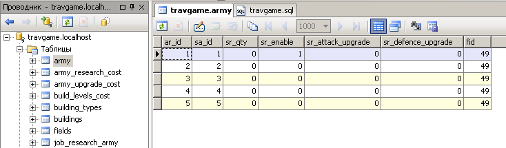
Рисунок 6.1.2
Вы видите, что поле
sr_enable установлено в 1 только для типа войск
sa_id = 1, то есть для легионеров, значит
в казарме мы пока можем производить только их.
Вы помните, что для "входа" в какое-то здание из карты поселка
служит скрипт build.php, а к нему
подключаются шаблоны, характерные для каждого здания. Не исключение
и казарма. Как Вы видели из справочника building_types
для казармы название шаблона -
tpl_g19.php. Давайте рассмотрим, что в нем интересного.
// Казарма
echo '<form name="training" method="POST" action="build.php?'.$_SERVER["QUERY_STRING"].'">
<table style="border-collapse: collapse;" cellpadding="0" cellspacing="0" id="army"><tr>
<td width="250" class="tabhead">Название</td>
<td class="tabhead">Количество</td>
<td class="tabhead">Макс</td>
</tr>';
$res = mysql_query("SELECT sa.sa_id, sa_name, sa_image, sa_grain, sa_ore, sa_wood, sa_clay, sa_cons, sa_training_time, sr_qty
from spr_army sa
inner join army ar on ar.sa_id = sa.sa_id
where bt_id = 5 and fid=$fid" )
or die("Query failed : " . mysql_error());
while ($row = mysql_fetch_array( $res )) {
$btype = $row["bt_id"]; // какой тип здания?
$sa_id = $row["sa_id"]; // какой тип войска
$max_army = max_army_type( $fid, $row["sa_id"]);
echo '<tr><td class="armyinfo"><img src="'.$row["sa_image"].'"><a href="#">'.$row["sa_name"].'</a> (Имеется: '.$row["sr_qty"].') <br>';
echo '<img src="img/res/grain.png">'.$row["sa_grain"].' <img src="img/res/ore.png">'.$row["sa_ore"].' <img src="img/res/wood.png">'.
$row["sa_wood"].' <img src="img/res/clay.png">'.$row["sa_clay"].' <img src="img/res/cons.png">'.$row["sa_cons"].' <img src="img/res/time.png"> '.
$row["sa_training_time"].'</td>';
echo '<td class="armyinfo"> <input type="text" size=5 class="text" name="t'.$sa_id.'" value="0" maxlength="4"> </td>';
echo '<td class="armyinfo"> <a href="#" onClick="set_qty('.$sa_id.','.$max_army.')">('.$max_army.')</a></td>';
echo '</tr>';
}
echo '</table>';
echo '<br><img src="img/army/train.png" onclick="init_training()" style="cursor:hand"></br>
<input type="hidden" name="train">
</form>';
Фрагмент 6.1.8.В казарме тренируются
войска и мы внутри здания должны сделать механизм этой тренировки,
как Вы видите шаблон начинается с создания формы с именем training,
которая что-то отправляет в скриптовый файл build.php (
системная переменная $_SERVER["QUERY_STRING"] хранит аргументы
адресной строки, в нашем случае это номер здания, куда мы зашли).
Далее мы создаем HTML табличку с
заголовком Названия, количества и максимального количества создания
войск разных типов. В запросе (строки 9-13) мы получаем данные от
двух таблиц (соединенных по типу армии ar.sa_id = sa.sa_id) с
условием (where bt_id = 5 ), то есть, все войска, которые
производятся в казарме. (Для конюшни bt_id=6, мы ее создадим в
следующем пункте). Вы заметили что мы пока не ставим условие
sr_enable=1, то есть показывать для тренировки доступные войска. Это
делается в учебных целях, чтоб видеть всю пехоту и тренировать любые
войска. Позднее мы исправим это. Получив данные из запроса мы
выводим их в табличной форме, с картинками и данными по затратам
ресурсов и времени на производство отдельно взятого солдата. В конце
формы мы добавляем кнопку
,
нажав которую игрок может запустить механизм производства выбранных
им типов войск. При выборе количества войск для тренировки, это
количество можно вручную прописывать в текстовое поле (имя этого
поля создается динамически name="t'.$sa_id.' т.е. для легионера это
будет t1, преторианца
t2 и т.д.), а может щелкать на цифру максимально возможного
количества войск этого типа, которое можно сейчас создать. Откуда же
мы знаем это максимальное количество? Ну конечно же нам его сообщит
функция max_army_type (строка 18) и вот эта функция:
////// функция находит MAX кол-во воинов, которых можно произвести ///////
function max_army_type( $fid, $atype ){
$a_res = get_res( $fid );
$query = "SELECT sa_grain, sa_ore, sa_wood, sa_clay from spr_army where sa_id = $atype";
$res = mysql_query( $query ) or die("Query failed : " .$query);
$row = mysql_fetch_array( $res );
$arr = array( floor($a_res["grain"] / $row["sa_grain"]),floor($a_res["ore"] / $row["sa_ore"]),floor($a_res["wood"] / $row["sa_wood"]),
floor($a_res["clay"] / $row["sa_clay"]) );
sort($arr,SORT_NUMERIC);
return( $arr[0]);
}
Фрагмент 6.1.9.
Эта функция получает на входе два аргумента - идентификатор поселка
и тип армии. Вначале она узнает, сколько ресурсов есть у игрока
(строка 3), затем из таблицы выясняет - сколько же нужно для
тренировки одного солдата указанного типа ($atype). Потом в массив $arr
помещается информация - частное от деления имеющихся ресурсов
на нужные для тренировки 1 солдата, после чего массив сортируется
стандартной в PHP функцией sort (с опцией
сортировки чисел - SORT_NUMERIC), так мы в массиве с элементом
[0] получим наименьшее число - это и будет
минимальное число солдат, которое можно создать на имеющиеся в
распоряжении игрока ресурсы.
В Фрагменте 6.1.8 Вы также можете видеть вызов
JavaScript функции set_qty
которая по щелчку на максимальном числе доступных войск для
тренировки помещает его в текстовое поле количества :
function set_qty( elem, qty ){
document.getElementById("t"+elem).value = qty;
}
Фрагмент 6.1.10В общем, у нас должно
получиться нечто следующее:
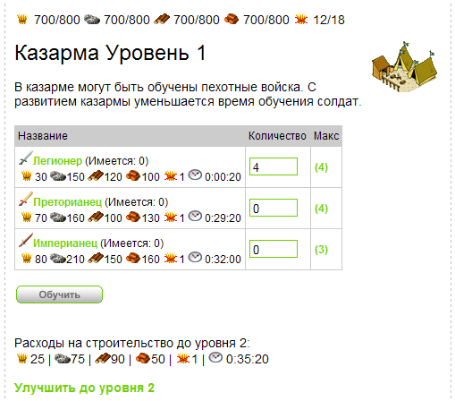
Рисунок 6.1.3
Вы заметили, что время тренировки легионера всего 20 секунд, мы
специально сделали это так, установив время тренировки легионеров в
таблице spr_army маленьким, чтоб видеть как она происходит и
завершается как можно быстрее. Но для проведения тренировки нам
понадобится таблица очереди тренировок и мы создадим ее, назвав ее -
job_training_army.
/* таблица очереди тренировки солдат */
CREATE TABLE `job_training_army` (
jt_id bigint(20) unsigned NOT NULL auto_increment, /*ID*/
sa_id bigint(20), /*ID из spr_army*/
fid int, /*принадлежность поселку*/
jt_start_time bigint DEFAULT 0, /*начало тренировки*/
jt_end_time bigint DEFAULT 0, /*завешение времени тренировки*/
jt_qty int default 0, /* сколько солдат в очереди */
PRIMARY KEY (`jt_id`)
) ENGINE=MyISAM DEFAULT CHARSET=cp1251;
Фрагмент 6.1.11
Эта таблица слегка напоминает таблицу очереди апгрейдов зданий
или ресурсных полей, но в ней есть поле jt_qty, которое указывает -
сколько воинов тренируется в данный момент и суммарное время на
тренировку, к примеру 10 солдат будет равно количеству времени на
тренировку одного солдата умножить на 10.
Как Вы помните из фрагмента 6.1.8 при нажатии на кнопку
(имя этой кнопки - train)
вызывается JavaScript функция
init_training(). Что же она делает?
Заглянем в наш файл main.js для
текущего занятия:
function init_training(){
training.submit();
}
Фрагмент 6.1.12Ничего сложного не делает -
запускает на выполнение (submit)
форму training из фрагмента 6.1.8 и та отправляет данные в
скрипт build.php. Что же происходит
дальше с этими отправленными данными в файле
build.php. А вот что:
// задали тренировку войск
if( isset( $_POST["train"] ) ){
for( $i=1; $i<10; $i++ ){
if( isset( $_POST["t".$i])){
begin_training( $fid, $_POST["t".$i], $i );
}
}
}
Фрагмент 6.1.13Вы видите, что по если мы обнаружили что значение
переменной train, в массиве $_POST установлено, значит предпринята
попытка тренировки войск и мы должны перебрать все типы войск (в
дальнейшем их будет 10, поэтому переберем все 10). Однако мы
проверяем установлены ли переменные t1, t2,
t3 и т.д. чтоб не возникло ошибок и только
для установленных вызываем функцию begin_training,
куда передает идентификатор поселка, количество (в
t1,t2...хранится именно количество,
указанное в форме отправки данных в
tpl_g19.php) и номер (тип войска). Давайте рассмотрим эту
функцию begin_training.
////// функция засовывает в очередь тренировки армии ////////////
function begin_training( $fid, $qty, $army_type ){
if( $qty > 0 ){
// проверим максимум возможного кол-ва воинов?
if( $qty <= max_army_type( $fid, $army_type ) ){
// израсходуем положенные ресурсы
$query = "SELECT sa_grain, sa_ore, sa_wood, sa_clay, sa_training_time from spr_army where sa_id = $army_type";
$res = mysql_query( $query ) or die("Query failed : " .$query);
$row = mysql_fetch_array( $res );
$grain_all = $row["sa_grain"] * $qty;
$ore_all = $row["sa_ore"] * $qty;
$wood_all = $row["sa_wood"] * $qty;
$clay_all = $row["sa_clay"] * $qty;
$training_time = $row["sa_training_time"];
$query = "update fields set f_grain=f_grain-$grain_all,
f_ore=f_ore-$ore_all,
f_wood=f_wood-$wood_all,
f_clay=f_clay-$clay_all where fid=$fid";
$result = mysql_query($query) or die("Query failed : " . mysql_error());
$ltet = get_last_train_end_time( $fid );
$start_time = time() + $ltet ;
$end_time = $start_time+h2s( $training_time )*$qty;
// поместим в очередь тренировки воинов
$query = "insert into job_training_army(sa_id,fid,jt_start_time,jt_end_time,jt_qty)
values($army_type,$fid,$start_time,$end_time,$qty)";
$result = mysql_query($query) or die("Query failed : " . mysql_error());
}
}
}
Фрагмент 6.1.14В этой функции мы еще раз проверим возможность
постройки указанного количества воинов (а вдруг игрок сам ввел
вручную какое-то нереальное значение) при помощи
max_army_type. Затем узнаем, сколько
требуется времени и ресурсов на 1 воина этого типа из таблицы
spr_army . Перемножим эти значения на количество воинов. В
строках 19-23 мы отнимем эти значения от имеющихся ресурсов в наем
поселке (таблица fields ), расчитаем время начала и
завершения тренировки каждого воина, так как тренировка идет
последовательно, завершилась одна - началась следующая и засунем все
эти данные в таблицу job_training_army. Как Вы заметили у нас
еще задействована функция
get_last_train_end_time. В чем ее роль? Дело в том, что игрок
мог сперва задать тренировку двух легионеров, а потом вдруг решил
тренировать еще двух легионеров. Эти очереди тренировок не могут
идти параллельно, поэтому мы должны узнать время завершения
тренировки двух первых легионеров и уже это время будет стартовым
для следующей группы войск. Изучите эту функцию сами. Она как и все
остальные находится в файле functions.inc.php
здесь.
А сейчас мы должны показать процесс тренировки, чтоб игрок видел на
какое время ему рассчитывать! И показом этой тренировки у нас
займется функция с названием
show_training_progess.
/////////// показывает - что в данный момент апгрейдится //////////
function show_training_progess( $p_fid ){
$cnt = 0;
$result = mysql_query("SELECT sa_name, sa_image, jt_start_time, jt_end_time, jt_qty from job_training_army jta
inner join spr_army a on a.sa_id = jta.sa_id
where jta.fid=$p_fid" )
or die("Query failed : " . mysql_error());
$num_rows = mysql_num_rows( $result );
if( $num_rows > 0 ){
$script = "";
echo '<table style="border-collapse: collapse;" cellpadding="0" cellspacing="0" id="army"><tr>
<td width="262" class="tabhead">Обучение</td>
<td class="tabhead">Осталось</td>
<td class="tabhead">Готово в</td>
</tr>';
while ($row = mysql_fetch_array( $result )) {
$time_s = $row["jt_start_time"];
$time_e = $row["jt_end_time"];
$sa_name = $row["sa_name"];
$sa_image = $row["sa_image"];
$qty = $row["jt_qty"];
echo '<tr><td class="armyinfo"><img src="'.$sa_image.'">'.$qty.' '.$sa_name.' </td>
<td class="armyinfo"><span id="restimer'.$cnt.'"></span> </td>
<td class="armyinfo"> '.date('H:i',$time_e).'</td></tr>';
$rest = s2h($time_e-time());
$hms = explode(':', $rest);
$script .= "atimers[$cnt] = [ $hms[0], $hms[1], $hms[2] ]; ";
$cnt ++;
}
echo '</table>';
echo '<script>';
echo $script;
echo 'updateClock(); setInterval("updateClock()", 1000 );';
echo '</script>';
}
}
Фрагмент 6.1.15Конечно же эта функция очень похожа на аналогичные
для показа очереди апгрейдов ресурсных полей и строительства зданий.
Ну разве что в запросах используются другие таблицы spr_army
и job_training_army. Здесь мы также из этих таблиц получаем
данные о времени начала и завершения, которые используем для
создания строки очереди с таймерами обратного отсчета, которые
засовываем в массив atimers. Все это
Вам уже должно быть знакомо.
Таким образом, если мы поместим вызов функции в шаблоне
tpl_g19.php то при нажатии на кнопку
увидим следующую картину:
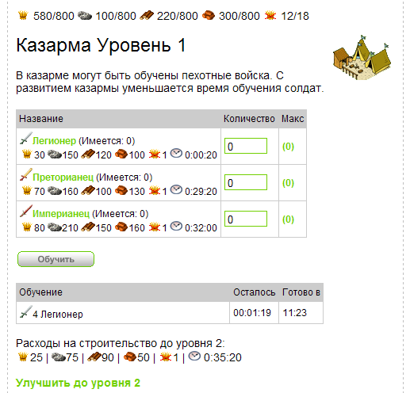
Рисунок 6.1.4
Нам осталось только сделать функцию, которая будет отслеживать -
закончилась ли тренировка какого-нибудь солдата. Вот эта функция,
которую мы назвали check_end_training:
///////////////// проверка - сколько воинов уже готово //////////////
function check_end_training( $fid ){
// что у нас в очереди строительства?
$res = mysql_query("SELECT sa.sa_id, sa_training_time, jt_id, jt_start_time, jt_end_time, jt_qty from job_training_army jta
inner join spr_army sa on sa.sa_id = jta.sa_id
where jta.fid=$fid" )
or die("Query failed : " . mysql_error());
$num_rows = mysql_num_rows( $res );
if( $num_rows > 0 ){
$cur_time = time();
while ($row = mysql_fetch_array( $res )) {
$army_type = $row["sa_id"] ;
$jt_id = $row["jt_id"];
$qty = $row["jt_qty"];
$time_s = $row["jt_start_time"];
$time_e = $row["jt_end_time"];
$training_time = $row["sa_training_time"];
if( $time_e <= $cur_time ){ // эта очередь завершена
// убираем из очереди
$result = mysql_query("delete from job_training_army
where jt_id=$jt_id" )
or die("Query failed : " . mysql_error());
// добавляем в готовую армию
$result = mysql_query("update army set sr_qty = sr_qty + $qty
where sa_id=$army_type and fid=$fid" )
or die("Query failed : " . mysql_error());
} elseif( ($time_e > $cur_time) && ($time_s < $cur_time) ){
if( $qty > 1 ){ // несколько воинов одного типа
$units_ready = floor( ($cur_time - $time_s) / h2s($training_time) );
// добавляем в готовую армию
$result = mysql_query("update army set sr_qty = sr_qty + $units_ready
where sa_id=$army_type and fid=$fid" )
or die("Query failed : " . mysql_error());
// обновим очередь
$new_start_time = $time_s + $units_ready*h2s( $training_time );
$result = mysql_query("update job_training_army
set jt_start_time = $new_start_time,
jt_qty = jt_qty - $units_ready
where sa_id=$army_type and fid=$fid" )
or die("Query failed : " . mysql_error());
}
}
}
}
}
Фрагмент 6.1.16
В этой функции есть интересный момент, отличающий ее от подобных
функций, которые отслеживали завершение очереди строительства или
апгрейдов ресурсных полей. И этот момент состоит в том, что может
быть задано количество тренируемых войск. Таким образом при проверке
- сколько воинов уже построилось мы должны анализировать, а сколько
же вообще воинов в этой очереди? Очереди тренировок (если они есть)
выбираются в запросе (строки 4-6). Затем считываются данные,
возвращаемые запросом - время старта, окончания тренировки, кол-во и
т.д. В условии (строки 21-31) все просто - текущее время больше
времен завершения - значит все войска уже построены и мы засовываем
их в таблицу army (соответствующего
типа, конечно!) и удаляем очередь из
таблицы job_training_army. А Вот с условием (строки 31-46)
сложнее, текущее время меньше времени завершения всей очереди
тренировки, но так как в очереди к примеру 4 легионера, то возможно
пару солдат уже успело построиться. Чтоб узнать, сколько юнитов уже
готовы мы просто разницу между текущим временем и временем старта
тренировки делим на время тренировки одного солдата. А потом
обновляем очередь с этого момента. Новое время старта будет равно
прошлому времени старта плюс количество солдат умноженное на время
тренировки одного солдата. Может это не совсем математически
корректно (так как тут может теряться еще кусочек времени на
тренировку текущего воина), но для наших учебных целей вполне
сгодится.
Итак после завершения тренировки мы увидим следующее:

Рисунок 6.1.5
Вы видите что легионеров показывается (Имеется: 4), стало быть
тренировка завершена!
6.2.
Конюшня, тренировка конницы
Мы так все подробно расписали для казармы,
что тут практически нечего нового показывать. Скрипты практически
идентичны, как в случае с казармой. И все таки сделаем кое что. Для
начала добавим описание типа конюшни в справочник с
постройками
building_types:
insert into building_types (bt_id,bt_name,bt_image,bt_image_not_ready,bt_description,bt_ycoord_dif,bt_template)
values (6,'Конюшня','img/vill/g20.gif','img/vill/g20b.gif','В конюшне могут быть обучены все войска кавалерии...',22,'tpl_g20.php');
Фрагмент 6.2.1И затем сразу же добавляем несколько уровней апгрейдов
конюшни в таблицу
build_levels_cost.
/*конюшня*/
insert into `build_levels_cost`(bt_id, blc_level, blc_wood, blc_clay, blc_ore, blc_grain, blc_cons, blc_time_upgrade)
values (6,0,0,0,0,0,0,'0:00:00');
insert into `build_levels_cost`(bt_id, blc_level, blc_wood, blc_clay, blc_ore, blc_grain, blc_cons, blc_time_upgrade)
values (6,1,260,140,220,100,5,'0:28:20');
insert into `build_levels_cost`(bt_id, blc_level, blc_wood, blc_clay, blc_ore, blc_grain, blc_cons, blc_time_upgrade)
values (6,2,335,180,280,130,3,'0:36:50');
insert into `build_levels_cost`(bt_id, blc_level, blc_wood, blc_clay, blc_ore, blc_grain, blc_cons, blc_time_upgrade)
values (6,3,425,230,360,165,3,'0:46:30');
insert into `build_levels_cost`(bt_id, blc_level, blc_wood, blc_clay, blc_ore, blc_grain, blc_cons, blc_time_upgrade)
values (6,4,545,295,460,210,3,'0:57:50');
insert into `build_levels_cost`(bt_id, blc_level, blc_wood, blc_clay, blc_ore, blc_grain, blc_cons, blc_time_upgrade)
values (6,5,700,375,590,270,3,'1:11:00');
Фрагмент 6.2.2На апгрейды конюшни как Вы видите требуется ресурсов
больше чем для казармы, но и войска которые создаются в конюшне
посильнее чем пехота, так что затраты эти правомочны.
Для отображения конюшни на карте поселка нам понадобится картинка:
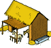
Давайте поступим как с казармой и сразу добавим конюшню первого
уровня к нам в поселок, то есть в функции makebuildplaces
мы с Вами поменяем одну стройплощадку на уже готовую конюшню
первого уровня:
insert into `buildings` (bnum,bt_id,b_xcoord,b_ycoord,b_level,fid) VALUES (4,6,345,94,1,p_fid);
Фрагмент 6.2.3
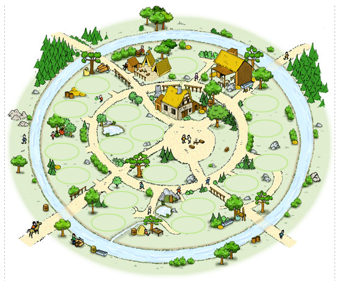
Рисунок 6.2.1
Еще нам понадобится добавить типы войск, которые создаются в конюшне:
/*для конюшни*/
insert into spr_army(sa_id,sa_name,sa_image,sa_attack,sa_inf_defence,sa_cav_defence,sa_wood,sa_clay,sa_ore,sa_grain,sa_speed,sa_capacity,
sa_cons,sa_training_time,bt_id,sa_description)
values (4,'Конный разведчик','img/army/4.gif',0,20,10,20,140,160,40,7,0,2,'0:22:40',6,'Конные разведчики - разведывательная единица Рима....');
insert into spr_army(sa_id,sa_name,sa_image,sa_attack,sa_inf_defence,sa_cav_defence,sa_wood,sa_clay,sa_ore,sa_grain,sa_speed,sa_capacity,
sa_cons,sa_training_time,bt_id,sa_description)
values (5,'Конница императора','img/army/5.gif',180,80,105,800,550,640,180,10,70,4,'0:58:40',6,'Конница Цезаря - это элитные войска римлян...');
Фрагмент 6.2.4Пока добавили два типа, в следующих занятиях
добавим еще один тип - Конницу Цезаря, а сейчас достаточно и этого.
После пересоздания базы из скрипта с обновленной функцией makebuildplaces
и авторизации в игре мы можем лицезреть появление конюшни в
нашем поселке. Чтоб войти в нее будем использовать шаблон
tpl_g20.php, Который идентичен шаблону для казармы, единственное
в запросе вместо bt_id = 5 нужно указать bt_id = 6 (так как тип
конюшни в справочнике spr_army
равен 6)
Вот как выглядит детальная информация оп конюшне, после
"входа" в нее:
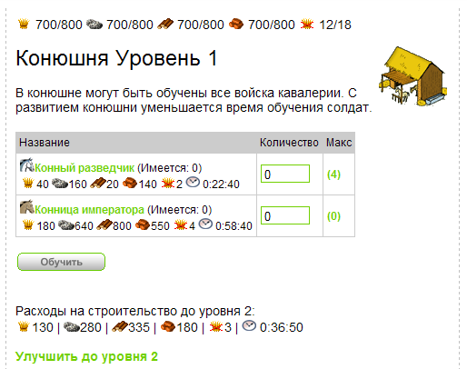
Рисунок 6.2.2
Все тренировки войск в конюшне осуществляются также как и для
казармы.
6.3.
Академия
Мы уже упоминали, что некоторые типы войск сперва нужно
исследовать. В предыдущих пунктах мы пренебрегли этим условием и
потому могли создавать в казарме и конюшне кого попало. А ведь
вначале нам доступны для тренировки только легионеры! Как же нам
научиться создавать другие войска? Для этих целей нам будет служить
Академия, где будут исследоваться новые типы войск. Вот картинка
Академии:
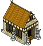
Для начала добавим описание типа Академии в справочник с
постройками
building_types:
insert into building_types (bt_id,bt_name,bt_image,bt_image_not_ready,bt_description,bt_ycoord_dif,bt_template)
values (7,'Академия','img/vill/g22.gif','img/vill/g22b.gif','В академии могут быть исследованы новые типы войск...',22,'tpl_g22.php');
Фрагмент 6.3.1И затем сразу же добавляем несколько уровней апгрейдов
Академии в таблицу
build_levels_cost.
/*академия*/
insert into `build_levels_cost`(bt_id, blc_level, blc_wood, blc_clay, blc_ore, blc_grain, blc_cons, blc_time_upgrade)
values (7,0,0,0,0,0,0,'0:00:00');
insert into `build_levels_cost`(bt_id, blc_level, blc_wood, blc_clay, blc_ore, blc_grain, blc_cons, blc_time_upgrade)
values (7,1,220,10,90,40,4,'0:25:50');
insert into `build_levels_cost`(bt_id, blc_level, blc_wood, blc_clay, blc_ore, blc_grain, blc_cons, blc_time_upgrade)
values (7,2,280,205,115,50,2,'0:33:50');
insert into `build_levels_cost`(bt_id, blc_level, blc_wood, blc_clay, blc_ore, blc_grain, blc_cons, blc_time_upgrade)
values (7,3,360,260,145,65,2,'0:43:00');
insert into `build_levels_cost`(bt_id, blc_level, blc_wood, blc_clay, blc_ore, blc_grain, blc_cons, blc_time_upgrade)
values (7,4,460,335,190,85,2,'0:53:50');
insert into `build_levels_cost`(bt_id, blc_level, blc_wood, blc_clay, blc_ore, blc_grain, blc_cons, blc_time_upgrade)
values (7,5,590,430,240,105,2,'1:06:20');
Фрагмент 6.3.2Давайте поступим с Академией также как поступали с
казармой и конюшней и сразу добавим это здание первого уровня к нам
в поселок, то есть в функции makebuildplaces
мы с Вами поменяем одну стройплощадку на уже готовую Академию
первого уровня:
insert into `buildings` (bnum,bt_id,b_xcoord,b_ycoord,b_level,fid) VALUES (9,7,172,303,1,p_fid);
Фрагмент 6.3.3
Для того чтоб знать время и расходы ресурсов на исследования нужных
нам типов войск, нам понадобится соответствующая справочная таблица
с именем army_research_cost:
/* таблица затрат на исследования */
CREATE TABLE `army_research_cost` (
arc_id int unsigned NOT NULL auto_increment, /*ID*/
sa_id bigint(20), /*ID из spr_army*/
arc_grain int DEFAULT 0,
arc_ore int DEFAULT 0,
arc_wood int DEFAULT 0,
arc_clay int DEFAULT 0,
arc_research_time CHAR(20),
PRIMARY KEY (`arc_id`)
) ENGINE=MyISAM DEFAULT CHARSET=cp1251;
insert into army_research_cost (sa_id,arc_wood,arc_clay,arc_ore,arc_grain,arc_research_time)
values (2,700,620,670,580,'1:58:00'); /*преторинец*/
insert into army_research_cost (sa_id,arc_wood,arc_clay,arc_ore,arc_grain,arc_research_time)
values (3,1000,740,1880,640,'2:06:00'); /*империанец*/
insert into army_research_cost (sa_id,arc_wood,arc_clay,arc_ore,arc_grain,arc_research_time)
values (4,940,740,360,400,'1:38:00'); /*разведчик*/
insert into army_research_cost (sa_id,arc_wood,arc_clay,arc_ore,arc_grain,arc_research_time)
values (5,3400,1860,2760,760,'2:42:00'); /*конница императора*/
Фрагмент 6.3.4Как видите, мы создали ее и тут де добавили необходимые
данные для пока что неисследованных типов войск.
И сейчас настало время для исследований, то есть пора создать
шаблон tpl_g22.php, который нам даст механизм исследований
для разных типов войск.
Вот как он выглядит:
<?
// Академия
echo '<table style="border-collapse: collapse;" cellpadding="0" cellspacing="0" id="army"><tr>
<td width="300" class="tabhead">Акдемия</td>
<td class="tabhead">Действие</td>
</tr>';
$res = mysql_query("SELECT sa.sa_id, sa_name, sa_image,
arc_grain, arc_ore, arc_wood, arc_clay, arc_research_time
from spr_army sa
inner join army ar on ar.sa_id = sa.sa_id
inner join army_research_cost arc on arc.sa_id = ar.sa_id
where sr_enable = 0 and fid=$fid" )
or die("Query failed : " . mysql_error());
while ($row = mysql_fetch_array( $res )) {
$atype = $row["sa_id"]; // какой тип войска
echo '<tr><td class="armyinfo"><img src="'.$row["sa_image"].'"><a href="#">'.$row["sa_name"].'</a><br>';
echo '<img src="img/res/grain.png">'.$row["arc_grain"].' <img src="img/res/ore.png">'.$row["arc_ore"].' <img src="img/res/wood.png">'.
$row["arc_wood"].' <img src="img/res/clay.png">'.$row["arc_clay"].' <img src="img/res/time.png"> '.$row["arc_research_time"].'</td>';
echo '<td class="armyinfo">';
if( !any_research( $fid ) ){
if( allow_research( $fid, $atype ) ){
echo '<a href="#" onClick="do_research('.$atype.')">Исследовать</a>';
} else {
echo '<font color="#CCCCCC">Не хватает сырья</font>';
}
} else echo '<font color="#CCCCCC">Проводятся исследования</font>';
echo '</td>';
echo '</tr>';
}
echo '</table>';
echo '<br>';
show_research_progess( $fid );
?>
Фрагмент 6.3.5
Вот как выглядит работа этого шаблона:
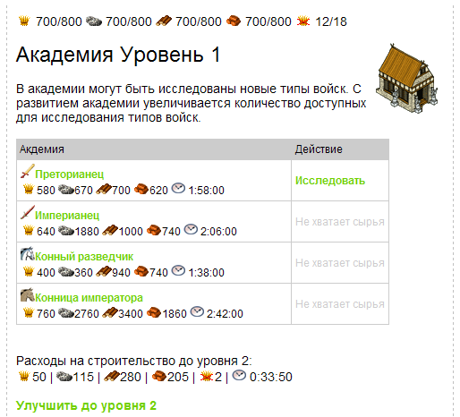
Рисунок 6.3.1
Изучите код фрагмента 6.3.5 самостоятельно. Он очень напоминает
шаблоны зданий рассматриваемые ранее и поэтому нам нет смысла
рассматривать его столь подробно. Давайте остановимся только на том,
что же произойдет если мы нажмем ссылку исследовать. Как Вы видите
из фрагмента 6.3.5 это приведет к выполнению
JavaScript функции do_research,
получающей в качестве аргумента тип исследуемого войска.
Вот как выглядит эта функция:
function do_research( atype ){
url=window.location.href;
if(url.indexOf('?')!=-1){
newurl = url.split('?')
params = newurl[1];
}
location.href="build.php?"+params+"&research="+atype;
}
Фрагмент 6.3.6Эта функция сохраняет текущие
параметры адресной строки браузера и еще добавляет один &research,
которому присваивается тип исследуемого войска, переданный этой
функции как аргумент. Ну а исследованиями опять же занимается наш
скрипт build.php. Вот как он с этим справляется:
// задали исследование в академии
if( isset( $_GET["research"] ) ){
if( !any_research( $fid ) ){
begin_research( $fid, $_GET["research"] );
}
}
Фрагмент 6.3.7
Получив методом GET тип исследуемого войска мы вызываем функцию
begin_research, которой передаем
идентификатор поселка и этот тип войска для исследования. Что же
происходит в кулуарах этой функции мы рассмотрим далее:
////// функция засовывает в очередь исследований ////////////
function begin_research( $fid, $atype ){
// израсходуем положенные ресурсы
$query = "SELECT arc_grain,
arc_ore,
arc_wood,
arc_clay,
arc_research_time
from army_research_cost
where sa_id=$atype";
$res = mysql_query( $query ) or die("Query failed 1: " .mysql_error());
$row = mysql_fetch_array( $res );
$arc_grain = $row["arc_grain"];
$arc_ore = $row["arc_ore"];
$arc_wood = $row["arc_wood"];
$arc_clay = $row["arc_clay"];
$arc_research_time = $row["arc_research_time"];
$query = "update fields set f_grain=f_grain-$arc_grain,
f_ore=f_ore-$arc_ore,
f_wood=f_wood-$arc_wood,
f_clay=f_clay-$arc_clay where fid=$fid";
$result = mysql_query($query) or die("Query failed : " . mysql_error());
$start_time = time();
$end_time = $start_time+h2s( $arc_research_time );
// поместим в очередь тренировки воинов
$query = "insert into job_research_army(sa_id,fid,jra_start_time,jra_end_time)
values($atype,$fid,$start_time,$end_time)";
$result = mysql_query($query) or die("Query failed : " . mysql_error());
}
Фрагмент 6.3.8Подобные функции мы уже разрабатывали. Действие ее
стандартно - узнать ресурсы, которые мы должны затратить на
исследования (из таблицы army_research_cost) отнять эти
ресурсы из наших запасов ( таблица fields ). Вычислить время
начала и завершения очереди исследования и собственно создать запись
в таблице очереди job_research_army, которая выглядит тоже
весьма стандартно:
/* таблица очереди исследования новых видов войск */
CREATE TABLE `job_research_army` (
jra_id bigint(20) unsigned NOT NULL auto_increment, /*ID*/
sa_id bigint(20), /*ID из spr_army - это тип войска*/
fid int, /*принадлежность поселку*/
jra_start_time bigint DEFAULT 0, /*начало исследования*/
jra_end_time bigint DEFAULT 0, /*завешение времени исследования*/
PRIMARY KEY (`jra_id`)
) ENGINE=MyISAM DEFAULT CHARSET=cp1251;
Фрагмент 6.3.9
Как показать очередь исследования рассмотрите самостоятельно - для
этого в файле functions.inc.php
есть функция show_research_progess.
А результат ее работы выглядит так:
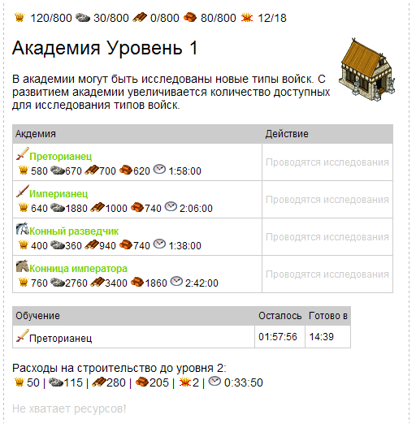
Рисунок 6.3.2
Проверка завершения исследования проверяется
функцией check_end_research, которая
также присутствует в файле functions.inc.php
и весь смысл ее работы заключается в том, чтоб присвоить значение
sr_enable = 1 тому типу войск, которые завершили исследование в
академии (текущее время стало больше времени завершения
исследований)
6.4.
Кузница оружия/доспехов
Мы уже создали несколько типов войск и немаловажным
фактором их успешного поведения в бою будет улучшение их
характеристик. Характеристики эти - усиление атаки и защиты, то есть
оружия и доспехов. Посему мы сейчас создадим еще два здания в нашем
поселке - кузницу оружия и кузницу доспехов. Картинки этих зданий
выглядят так:
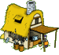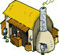
Сейчас мы добавим оба типа здания в нашу справочную таблицу
spr_army.
insert into building_types (bt_id,bt_name,bt_image,bt_image_not_ready,bt_description,bt_ycoord_dif,bt_template)
values (8,'Кузница оружия','img/vill/g12.gif','img/vill/g12b.gif','В плавильной печи кузницы можно улучшить оружие воинов.',22,'tpl_g12.php');
insert into building_types (bt_id,bt_name,bt_image,bt_image_not_ready,bt_description,bt_ycoord_dif,bt_template)
values (9,'Кузница доспехов','img/vill/g13.gif','img/vill/g13b.gif','В кузнице можно улучшить характеристики доспехов воинов.',22,'tpl_g13.php');
Фрагмент 6.4.1Уровни апгрейдов этих зданий:
/*кузница оружия*/
insert into `build_levels_cost`(bt_id, blc_level, blc_wood, blc_clay, blc_ore, blc_grain, blc_cons, blc_time_upgrade)
values (8,0,0,0,0,0,0,'0:00:00');
insert into `build_levels_cost`(bt_id, blc_level, blc_wood, blc_clay, blc_ore, blc_grain, blc_cons, blc_time_upgrade)
values (8,1,170,200,380,130,4,'0:25:50');
insert into `build_levels_cost`(bt_id, blc_level, blc_wood, blc_clay, blc_ore, blc_grain, blc_cons, blc_time_upgrade)
values (8,2,220,225,485,165,2,'0:33:50');
insert into `build_levels_cost`(bt_id, blc_level, blc_wood, blc_clay, blc_ore, blc_grain, blc_cons, blc_time_upgrade)
values (8,3,280,330,625,215,2,'0:43:00');
insert into `build_levels_cost`(bt_id, blc_level, blc_wood, blc_clay, blc_ore, blc_grain, blc_cons, blc_time_upgrade)
values (8,4,355,420,795,275,2,'0:53:50');
insert into `build_levels_cost`(bt_id, blc_level, blc_wood, blc_clay, blc_ore, blc_grain, blc_cons, blc_time_upgrade)
values (8,5,455,535,1020,350,2,'1:06:20');
/*кузница доспехов*/
insert into `build_levels_cost`(bt_id, blc_level, blc_wood, blc_clay, blc_ore, blc_grain, blc_cons, blc_time_upgrade)
values (9,0,0,0,0,0,0,'0:00:00');
insert into `build_levels_cost`(bt_id, blc_level, blc_wood, blc_clay, blc_ore, blc_grain, blc_cons, blc_time_upgrade)
values (9,1,130,210,410,130,4,'0:25:50');
insert into `build_levels_cost`(bt_id, blc_level, blc_wood, blc_clay, blc_ore, blc_grain, blc_cons, blc_time_upgrade)
values (9,2,165,270,525,165,2,'0:33:50');
insert into `build_levels_cost`(bt_id, blc_level, blc_wood, blc_clay, blc_ore, blc_grain, blc_cons, blc_time_upgrade)
values (9,3,215,345,670,215,2,'0:43:00');
insert into `build_levels_cost`(bt_id, blc_level, blc_wood, blc_clay, blc_ore, blc_grain, blc_cons, blc_time_upgrade)
values (9,4,275,440,860,275,2,'0:53:50');
insert into `build_levels_cost`(bt_id, blc_level, blc_wood, blc_clay, blc_ore, blc_grain, blc_cons, blc_time_upgrade)
values (9,5,350,565,1100,350,2,'1:06:20');
Фрагмент 6.4.2В функции makebuildplaces
сделаем необходимые изменения, чтоб
сразу добавить эти здания к нам в поселок:
insert into `buildings` (bnum,bt_id,b_xcoord,b_ycoord,b_level,fid) VALUES (17,8,235,260,1,p_fid);
insert into `buildings` (bnum,bt_id,b_xcoord,b_ycoord,b_level,fid) VALUES (20,9,176,161,1,p_fid);
Фрагмент 6.4.3
Вот они на карте поселка:
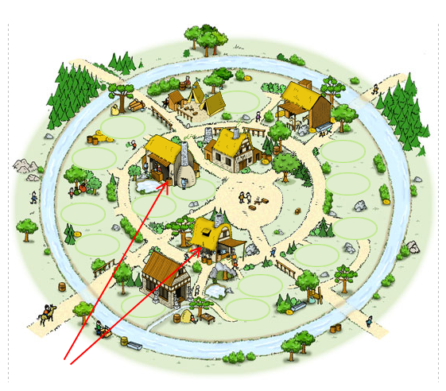
Рисунок 6.4.1
Для апгрейдов войск нам нужны данные по затратам и времени
апгрейдов, каждого из этих типов войск и
назовем мы таблицу, где все это будет храниться army_upgrade_cost.
Попутно введем сразу в нее данные хотя бы по два уровня апгрейдов
для каждого типа войск.
/*--------- справочник уровней апгрейдов оружия и доспехов в кузницах ---------------*/
/* для простоты - одна таблица и для доспехов и для оружия */
CREATE TABLE `army_upgrade_cost` (
auc_id bigint(20) unsigned NOT NULL auto_increment, /* ID*/
sa_id int, /* тип войска */
auc_level int, /* уровень*/
auc_grain int, /* колько зерна для перехода на этот уровень */
auc_ore int, /* колько руды для перехода на этот уровень */
auc_wood int, /* колько леса для перехода на этот уровень */
auc_clay int, /* колько глины для перехода на этот уровень */
auc_time_upgrade CHAR(10), /* время апгрейда оружия или брони до след. уровня */
PRIMARY KEY (`auc_id`)
) ENGINE=MyISAM DEFAULT CHARSET=cp1251;
/*добавим по 2 уровня апгрейда каждому типу войск*/
/*легионер*/
insert into army_upgrade_cost (sa_id,auc_level,auc_wood,auc_clay,auc_ore,auc_grain,auc_time_upgrade) values (1,1,560,620,680,370,'1:42:20');
insert into army_upgrade_cost (sa_id,auc_level,auc_wood,auc_clay,auc_ore,auc_grain,auc_time_upgrade) values (1,2,670,730,800,450,'2:32:00');
/*преторианец*/
insert into army_upgrade_cost (sa_id,auc_level,auc_wood,auc_clay,auc_ore,auc_grain,auc_time_upgrade) values (2,1,580,640,690,350,'1:45:20');
insert into army_upgrade_cost (sa_id,auc_level,auc_wood,auc_clay,auc_ore,auc_grain,auc_time_upgrade) values (2,2,560,620,680,370,'2:25:00');
/*империанец*/
insert into army_upgrade_cost (sa_id,auc_level,auc_wood,auc_clay,auc_ore,auc_grain,auc_time_upgrade) values (3,1,630,690,880,390,'1:42:20');
insert into army_upgrade_cost (sa_id,auc_level,auc_wood,auc_clay,auc_ore,auc_grain,auc_time_upgrade) values (3,2,740,850,1020,450,'2:52:00');
/*разведчик*/
insert into army_upgrade_cost (sa_id,auc_level,auc_wood,auc_clay,auc_ore,auc_grain,auc_time_upgrade) values (4,1,350,420,480,270,'1:22:20');
insert into army_upgrade_cost (sa_id,auc_level,auc_wood,auc_clay,auc_ore,auc_grain,auc_time_upgrade) values (4,2,520,610,640,350,'1:45:50');
/*конница императора*/
insert into army_upgrade_cost (sa_id,auc_level,auc_wood,auc_clay,auc_ore,auc_grain,auc_time_upgrade) values (5,1,800,1200,1680,870,'1:50:20');
insert into army_upgrade_cost (sa_id,auc_level,auc_wood,auc_clay,auc_ore,auc_grain,auc_time_upgrade) values (5,2,980,1450,1830,950,'2:45:00');
Фрагмент 6.4.4Давайте на примере кузницы
оружия рассмотрим, как же происходят эти
апгрейды наших войск и к чему это все приводит.
Как Вы догадались нам понадобится шаблон tpl_g12.php,
где будет создаваться вся эта кухня с
апгрейдами солдат. Вот как выглядит
содержимое этого шаблона:
<?
// Кузница оружия
$url = $_SERVER["QUERY_STRING"];
$btype = 8; /* Тип - кузница оружия */
echo '<table style="border-collapse: collapse;" cellpadding="0" cellspacing="0" id="army"><tr>
<td width="300" class="tabhead">Кузница оружия</td>
<td class="tabhead">Действие</td>
</tr>';
$res = mysql_query("SELECT sa.sa_id, sa_name, sa_image,
auc_grain, auc_ore, auc_wood, auc_clay, auc_time_upgrade,
sr_attack_upgrade
from spr_army sa
inner join army ar on ar.sa_id = sa.sa_id
inner join army_upgrade_cost auc on auc.sa_id = ar.sa_id and auc.auc_level = ar.sr_attack_upgrade+1
where sr_enable = 1 and fid=$fid" )
or die("Query failed : " . mysql_error());
while ($row = mysql_fetch_array( $res )) {
$atype = $row["sa_id"]; // какой тип войска
echo '<tr><td class="armyinfo"><img src="'.$row["sa_image"].'"><a href="#">'.$row["sa_name"].'</a> Уровень атаки('.$row[sr_attack_upgrade].')<br>';
echo '<img src="img/res/grain.png">'.$row["auc_grain"].' <img src="img/res/ore.png">'.$row["auc_ore"].' <img src="img/res/wood.png">'
.$row["auc_wood"].' <img src="img/res/clay.png">'.$row["auc_clay"].' <img src="img/res/time.png"> '.$row["auc_time_upgrade"].'</td>';
echo '<td class="armyinfo">';
if( !any_upgrade( $fid, $btype ) ){
if( allow_upgrade( $fid, $atype ) ){
echo '<a href="#" onClick="do_upgrade('.$atype.','.$btype.')">Улучшить</a>';
} else {
echo '<font color="#CCCCCC">Не хватает сырья</font>';
}
} else echo '<font color="#CCCCCC">Проводится совершенствование</font>';
echo '</td>';
echo '</tr>';
}
echo '</table>';
echo '<br>';
show_upgrade_progess( $fid, $btype );
?>
Фрагмент 6.4.5Не правда ли очень похоже на содержимое шаблона для
академии. Но заметьте, мы уже в запросе
(строки 11-17) используем условие (sr_enable
= 1), чтоб можно было улучшать только те
войска которые нам доступны. Для остальных - вперед, сперва
исследуйте в Академии!
Результат работы скрипта из шаблона tpl_g12.php
Вы можете увидеть на рисунке 6.4.2.
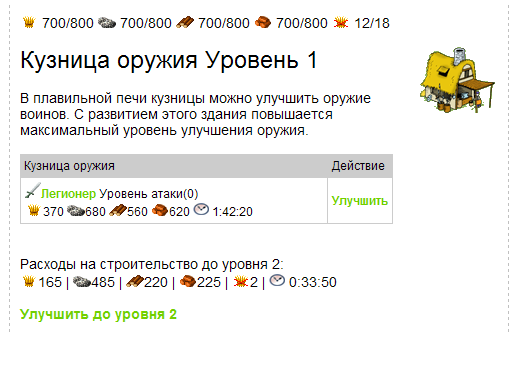
Рисунок 6.4.2
Что же будет если нажать на кнопку
"Улучшить". Как Вы видите,
срабатывает JavaScript
функция do_upgrade, аргументами
которой являются тип войска для улучшения и тип здания (чтоб не
путать кузницу доспехов с кузницей оружия).
Вот как выглядит эта функция:
// Инициировать улучшение в кузнице
function do_upgrade( atype, btype ){
url=window.location.href;
if(url.indexOf('?')!=-1){
newurl = url.split('?')
params = newurl[1];
}
location.href="build.php?"+params+"&upgrade="+atype+"&bt="+btype;
}
Фрагмент 6.4.6
А собственно улучшениями, снова займется скрипт build.php, ну
по крайней мере туда передается управление.
А он, в свою очередь принимает эти данные следующим образом:
// задали улучшение в кузнице
if( ( isset( $_GET["upgrade"] )) && (isset( $_GET["bt"]) ) ){
if( !any_upgrade( $fid, $_GET["bt"]) ) {
begin_upgrade( $fid, $_GET["upgrade"], $_GET["bt"] );
}
}
Фрагмент 6.4.7Конечно, же не составляет сложности догадаться что
улучшениями займется функция begin_upgrade, в которую
передаются аргументы: идентификатор поселка, тип войска для
улучшения и тип здания (какая из кузниц и соответственно что
улучшаем оружие или доспехи?) Приведем, содержащийся в ней код:
// добавляем в очередь улучшений войск
function begin_upgrade( $fid, $atype, $btype ){
// израсходуем положенные ресурсы
$query = "SELECT auc_grain,
auc_ore,
auc_wood,
auc_clay,
auc_time_upgrade
from army_upgrade_cost
where sa_id=$atype";
$res = mysql_query( $query ) or die("Query failed 1: " .mysql_error());
$row = mysql_fetch_array( $res );
$auc_grain = $row["auc_grain"];
$auc_ore = $row["auc_ore"];
$auc_wood = $row["auc_wood"];
$auc_clay = $row["auc_clay"];
$auc_time_upgrade = $row["auc_time_upgrade"];
$query = "update fields set f_grain=f_grain-$auc_grain,
f_ore=f_ore-$auc_ore,
f_wood=f_wood-$auc_wood,
f_clay=f_clay-$auc_clay where fid=$fid";
$result = mysql_query($query) or die("Query failed : " . mysql_error());
$start_time = time();
$end_time = $start_time+h2s( $auc_time_upgrade );
// поместим в очередь тренировки воинов
$query = "insert into job_upgrade_army(sa_id,fid,jua_start_time,jua_end_time,jua_type)
values($atype,$fid,$start_time,$end_time,$btype)";
$result = mysql_query($query) or die("Query failed : " . mysql_error());
}
Фрагмент 6.4.8
В этой функции мы определяем затраты на улучшения и вычитаем их из
наших имеющихся ресурсов (из таблицы fields ) и рассчитав
время улучшения, засовываем все данные в таблицу job_upgrade_army
(не забывайте про $btype (тип здания), так как от него
зависит, что мы улучшаем доспехи или оружие)
Функции показа хода улучшения войска
show_upgrade_progess и проверки завершения этого апгрейда
check_end_army_upgrade, Вы можете
рассмотреть сами, так как они практически ничем не отличаются от
подобных функций для апгрейдов зданий и ресурсных полей.
6.5.
Пункт сбора
Очень важной постройкой в поселке игрока является Пункт
Сбора. Это место сосредоточения всех готовых к атаке или обороне
войск, содержащихся в поселке. Выглядят картинки этого объекта так:
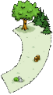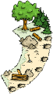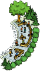
Вы не ошиблись тут находятся именно 3 картинки, а не две, как было
присуще всем остальным нашим постройкам. Все дело в том, что пункт
сбора строится не на любой стройплощадке, а в специально отведенном
месте поселке. Первая из трех картинок как раз отображает это место.
Вторая картинка - это строящийся пункт сбора и третья картинка - уже
построенный и готовый к использованию пункт сбора.
Таким образом у нас будет как бы два объекта - пункт сбора и место
под него.
/*пункт сбора*/
insert into building_types (bt_id,bt_name,bt_image,bt_image_not_ready,bt_description,bt_ycoord_dif,bt_template)
values (99,'Место под пункт сбора','img/vill/g16e.gif','img/vill/g16e.gif','',0,'tpl_g16e.php');
insert into building_types (bt_id,bt_name,bt_image,bt_image_not_ready,bt_description,bt_ycoord_dif,bt_template)
values (10,'Пункт сбора','img/vill/g16.gif','img/vill/g16b.gif','',0,'tpl_g16.php');
Фрагмент 6.5.1
И в SQL функции
makebuildplaces у нас место под пункт сбора будет вынесен в
отдельную строку:
/* отдельно площадка для пункта сбора */
insert into `buildings` (bnum,bt_id,b_xcoord,b_ycoord,b_level,fid) VALUES (21,99,326,162,0,p_fid);
Фрагмент 6.5.2Рассмотрим шаблон
tpl_g16e.php для места под пункт сбора:
// Место под пункт сбора
$res = mysql_query("SELECT bt.bt_id,bt.bt_name,bt.bt_image,bt_description,
blc_grain, blc_ore, blc_wood, blc_clay, blc_cons, blc_time_upgrade
FROM building_types bt
inner join build_levels_cost blc on blc.bt_id = bt.bt_id
WHERE blc_level = 1 and bt.bt_id = 10", $link )
or die("Query failed : " . mysql_error());
$row = mysql_fetch_array( $res );
$btype = $row["bt_id"]; // какой тип здания?
$bt_name = $row["bt_name"];
$bt_image = $row["bt_image"];
$bt_description = $row["bt_description"];
$a_grain = $row["blc_grain"];
$a_ore = $row["blc_ore"];
$a_wood = $row["blc_gwood"];
$a_clay = $row["blc_clay"];
$a_cons = $row["blc_cons"];
$a_time_up = $row["blc_time_upgrade"];
echo '<br><img src="../'.$bt_image.'" align="right">';
echo "<span class='res_header'>".$bt_name." </span><br><br>";
echo $bt_description."<br><br>";
echo '<img src="img/res/grain.png">'.$a_grain.' | <img src="img/res/ore.png">'.$a_ore.' | <img src="img/res/wood.png">'.$a_wood.' |
<img src="img/res/clay.png">'.$a_clay.' | <img src="img/res/cons.png">'.$a_cons.' | <img src="img/res/time.png"> '.$a_time_up.'<br>';
if( !build_upgrade_in_progress( $fid ) )
echo '<a class="build" href="village.php?bnum='.$bnum.'&bt='.$btype.'">Построить здание </a><br><br>';
else echo '<font color="#CCCCCC">Строители заняты</font>';
Фрагмент 6.5.3В запросе к таблицам building_types и
build_levels_cost (строки 3-8) мы узнаем ресурсы и затраты
времени, которые нужны для постройки пункта сбора войск, чтоб
вывести эту информацию на страничку в браузер для игрока, а также
формируем ссылку, нажав на которую игрок приступил бы к
строительству данного здания 29 поcле проверки
отсутствия какого-нибудь другого задания в очереди построек
при помощи функции build_upgrade_in_progress.
Не забудьте проверить - достаточно ли ресурсов для этой операции
самостоятельно!
На этом мы говорим Вам - до свидания, до следующей нашей лекции! А
все файлы, которые мы создали или поменяли в течении сегодняшнего
занятия Вы можете обнаружить здесь. Скрипт
актуальной базы travgame из этого урока
находится здесь.
В следующем уроке мы с Вами займемся
возведением еще нескольких типов зданий - тайника, таверны,
резиденции, а также разработаем механизм очередности строительства,
зависящей от уровня и присутствия в поселке родительских объектов.
|
|


 Регистрация
Регистрация